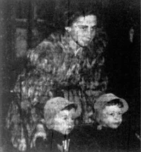

1. Robert Sandler's illness begins (August 1947)
On August 16, 1947, in Dorchester, Massachusetts, two-year-old Robert Sandler developed a fever. At first, the symptoms seemed minor, but he gradually became tired, pale, and increasingly weak. Robert had a twin brother, Elliott, who remained energetic and healthy. The contrast would become one of the chapter's most painful images: one twin continuing his ordinary childhood while the other grew seriously ill.
Robert's parents brought him to Children's Hospital in Boston. His spleen was massively enlarged, and a blood sample examined under Farber's microscope showed numerous immature lymphoid blasts—malignant cells multiplying rapidly. Robert had acute lymphoblastic leukemia, a disease that in the 1940s was almost always fatal.
This was precisely the kind of illness Farber wanted to confront with chemicals. He had received experimental antifolates from the laboratory of Yellapragada Subbarao. But no one yet knew whether these drugs could actually make a child's leukemia retreat.
2. Farber begins treatment with PAA (September 1947)
On September 6, 1947, Farber started treating Robert with pteroylaspartic acid (PAA), one of the first antifolates supplied by Lederle Laboratories. The idea came from the previous chapter: folate supports processes necessary for DNA synthesis; an antagonist might interfere with the enormous cellular multiplication of leukemia.
Unfortunately, PAA did not halt Robert's disease. Over the following weeks and months he became weaker. He developed a limp, joint pain, and severe symptoms caused by leukemia spreading through his body. The malignant process damaged his thigh bone so severely that it fractured, producing terrible pain. His spleen grew enormous, reaching toward his pelvis.
By December he was swollen, pale, exhausted, and close to death. The first experimental drug had failed. Farber was left with a critically ill child and no clear evidence that his approach would work.
3. Aminopterin arrives on December 28
On December 28, 1947, Farber received another antifolate, aminopterin, developed by the team working with Subbarao and Harriet Kiltie. Its chemical structure was slightly different from that of PAA. Farber began giving the new drug to Robert immediately. His hopes were modest: perhaps it could slow the disease or provide a short reprieve.
But the result was extraordinary. Robert's white-cell count had risen from about 10,000 in September to 20,000 in November, then to nearly 70,000 in December, as described in the book. After aminopterin treatment, the rise stopped. The count began falling. Around New Year's Eve, it had dropped to approximately one-sixth of its peak and was approaching a normal range.
Doctors could see far fewer abnormal blasts under the microscope. The cancer was not completely gone; malignant cells remained. Nevertheless, for the first time in this terrible illness, a chemical had produced a striking biological response.
| Stage | Robert's condition |
|---|---|
| August 1947 | Fever, pallor, rapidly developing illness |
| September 6 | PAA treatment starts; the leukemia continues progressing |
| December 1947 | Severe weakness, bone injury, enormous spleen; white count near 70,000 |
| December 28 | Aminopterin treatment begins |
| Around New Year's Eve | White-cell count falls dramatically, to roughly one-sixth of its peak |
| January–February 1948 | Walking, eating, and playing become possible again |

4. A child briefly returns to normal life
On January 13, 1948, Robert came to the clinic walking on his own for the first time in about two months. His liver and spleen had shrunk so much that his clothes felt loose around the abdomen. His bleeding had stopped. His appetite came back, and he began behaving more like an ordinary toddler.
By February, Farber recorded that Robert's alertness, nutrition, and activity were comparable to those of his healthy twin. Imagine the emotional force of this change for the family. The twins had briefly seemed to be moving toward different worlds—one full of illness, one full of ordinary childhood. Now Robert was again eating and playing as Elliott did.
These improvements mattered more than laboratory numbers. They meant time with family, movement without unbearable pain, and the possibility of simply being a child. A temporary return to everyday life was already something doctors had almost never seen in childhood leukemia.
5. What remission really means
The chapter introduces the idea of a remission: a period in which the signs of cancer decrease substantially, sometimes disappearing from the tests doctors use. A remission can be complete or partial, depending on what the measurements show. But it is not automatically the same as a permanent cure.
Imagine a garden overrun by weeds. You treat the ground and most visible weeds disappear. The garden looks healthy again. But some roots may survive under the surface. If they begin growing later, the weeds return. In cancer, surviving malignant cells can similarly lead to a relapse—the return of disease after improvement.
For Robert, aminopterin had interrupted the leukemia's visible advance, but it had not destroyed every cancer cell. That difference between response, remission, and cure would become one of oncology's most important distinctions.
6. Farber faces opposition inside the hospital
Farber's experiments were controversial. Many doctors at Children's Hospital believed that patients with acute leukemia could not be saved and that aggressive experimental drugs would merely cause additional suffering. Some argued that such treatments should only be used in the very last moments of a child's life. Farber countered that waiting until all hope was gone would make meaningful testing impossible.
Hospital staff became so unhappy with his work that pediatric interns were withdrawn from the chemotherapy unit. Farber and his assistants were left to handle much of the care. They worked in improvised spaces near bathrooms, in unused rooms and offices, with inadequate institutional support. Assistants even sharpened bone-marrow needles themselves.
The disagreement was not simply between good doctors and bad doctors. The critics were worried about harm from unproven drugs. Farber believed that accepting inevitable death without testing possible treatments would prevent any progress. The history of chemotherapy begins inside this genuinely difficult medical and ethical tension.
7. The question of consent and experimental risk
Mukherjee also reminds us that medical experiments in the 1940s operated under very different ethical expectations. Formal research consent was often not sought in the way it is today. Parents might be told little; children were rarely asked for assent. The Nuremberg Code, stressing voluntary consent in human experiments, was formulated in August 1947—less than a month before Robert began PAA.
This history should not be flattened into a heroic success story. Farber's experiments were dangerous, and the children and families were vulnerable. The possibility of finding a cure did not erase the need to ask who accepted the risk, who understood it, and who made the decision.
Modern clinical research has developed more demanding expectations for informed consent, independent review, and protection of vulnerable participants. Those standards grew partly because earlier medical history contained episodes in which desperate patients had too little control over what happened to them.
8. More children arrive, and Farber builds a team
Robert's improvement encouraged Farber. Other children with leukemia began arriving at his clinic. Among them were toddlers with unusual lumps and young children weakened by months of illness. Farber recruited additional physicians, including hematologist Louis Diamond and assistants James Wolff, Robert Mercer, and Robert Sylvester.
The group carefully documented blood counts, fevers, transfusions, and changes in symptoms. Farber insisted on measurement. One child's apparent recovery could be dismissed as an accident, but a pattern across multiple patients could become evidence that a medicine was genuinely affecting the disease.
Harsh Boston snowstorms complicated their work in early 1948. Daily injections became difficult, and the team temporarily reduced the frequency to three times weekly before resuming daily treatment. Yet the clinic continued to receive patients and observe responses.

9. Children return to school—and then relapse
Several children experienced improvements that were startling by the standards of the period. Two boys were able to return to school. A young girl who had spent months in bed began running and playing. In some cases malignant cells became temporarily difficult to find in the blood. The body could begin recovering normal functions as the leukemia burden fell.
But the same disappointing pattern kept repeating. After weeks or months, the disease returned. Malignant cells emerged again in the bone marrow and spread into the blood. Even the stronger antifolate drugs could not permanently control them. Robert Sandler died in 1948, after his temporary remission ended. He was only three years old.
This is the chapter's central emotional contradiction. The treatment had truly worked for a while, and Farber had compelling evidence of a drug effect. Yet the child whose recovery proved the possibility of chemotherapy did not survive. Robert is remembered in the book's dedication.
10. The first sixteen patients: Results in numbers
By April 1948, Farber and his colleagues had gathered results from 16 children. Of these, 10 had shown a response to the antifolate treatment. Five remained alive four to six months after their diagnosis. These outcomes were not durable cures, but in an era when acute childhood leukemia usually moved relentlessly toward death, the changes were extraordinary.
| Measure | Historical result | What it does—and does not—mean |
|---|---|---|
| Children treated | 16 | The size of Farber's early reported group |
| Children who responded | 10 | Evidence of treatment activity, not ten cures |
| Alive four to six months after diagnosis | 5 | Historically significant survival, not proof of permanent recovery |
A scientific result must be described accurately. The falling cell counts and clinical improvements were real; so were the eventual relapses. Saying Farber “cured childhood leukemia” in 1948 would be incorrect. Saying he showed that a chemical drug could suppress leukemia captures the genuine breakthrough.
11. The 1948 paper changes the question
On June 3, 1948, Farber and his team published their findings in the New England Journal of Medicine. The paper was dense with blood counts, photographs, tables, and clinical observations. Its language was careful and scientific, but behind the measurements stood sixteen young lives and the struggles of their families.
Other doctors reacted with skepticism, disbelief, and even outrage. The idea that cancer could be attacked chemically went against entrenched assumptions. Yet the evidence suggested that an aggressive systemic malignancy was not absolutely immune to medicines.
Until then, the central question often seemed to be, “Can a chemical treat cancer at all?” Farber's observations allowed the question to become more ambitious: Which drugs, doses, and combinations might turn a short remission into lasting survival? That change opened a new research program.
12. Why the title is “Farber's Gauntlet”
To throw down the gauntlet means to issue a challenge, like a knight throwing down a glove before a duel. Farber's work challenged future doctors and scientists to continue where he had begun. The task was no longer to prove that cancer was completely beyond chemical influence. The task was to improve the available drugs and learn how to overcome relapse.
Farber imagined substances that would kill malignant cells while leaving normal tissues able to recover. He imagined a larger collection of anticancer medicines and dreamed that what was learned from leukemia might one day help treat other cancers. His dreams were still far ahead of the evidence, but they were no longer detached from it.
13. The deeper meaning of Chapter 3
A medical breakthrough is not always a cure. Robert's illness returned, yet the temporary remission changed what scientists believed possible. Medical progress carries a human cost. Families experience events as survival, suffering, and loss; scientists may also see them as data. Both views must remain visible.
Measurement transforms hope into evidence. Farber's carefully recorded counts demonstrated that the drug had an effect. But ethical questions remain even when experiments contribute to progress. These children were not merely scientific opportunities; they were patients whose suffering mattered in its own right.
Chapter takeaway: Farber did not defeat leukemia in 1948. He showed that an aggressive cancer could retreat in response to a drug that interfered with its chemistry. That temporary victory became the starting point for later chemotherapy research.